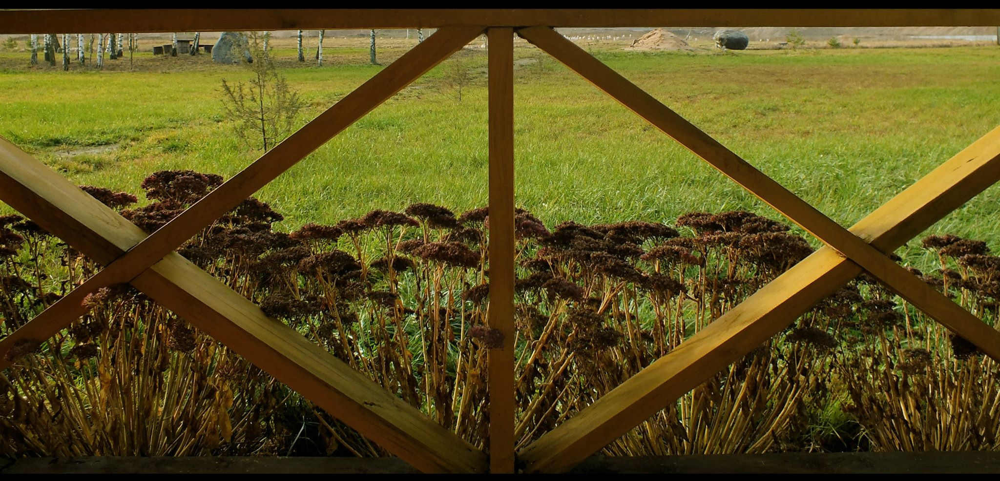
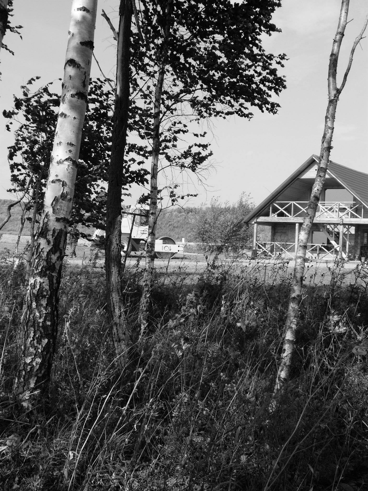
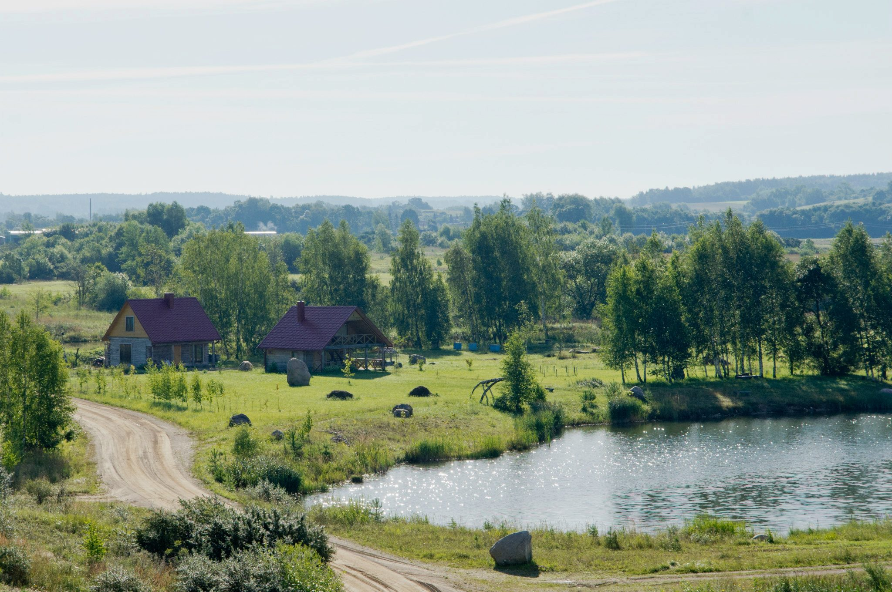
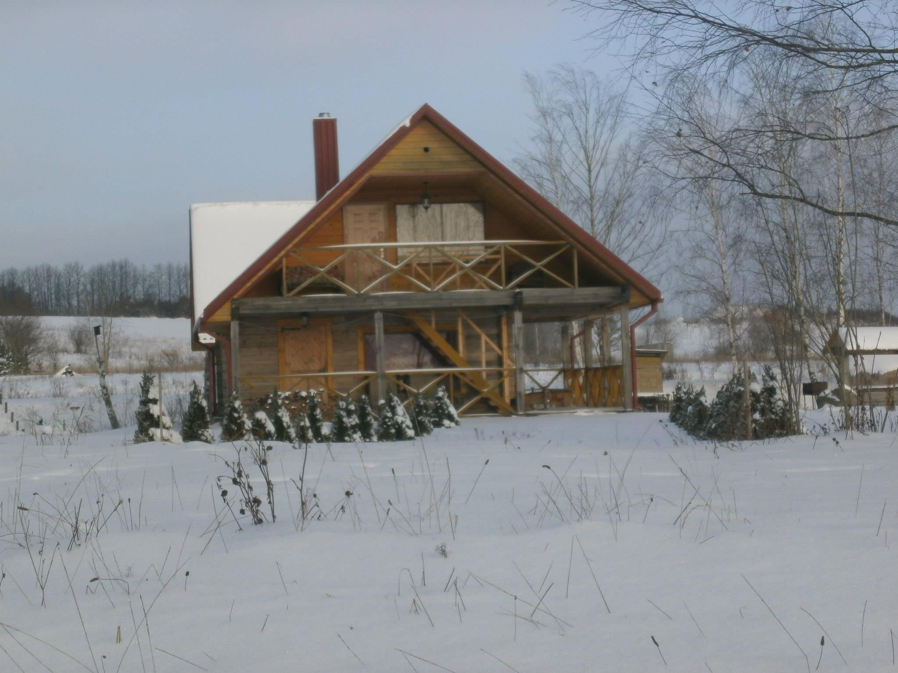
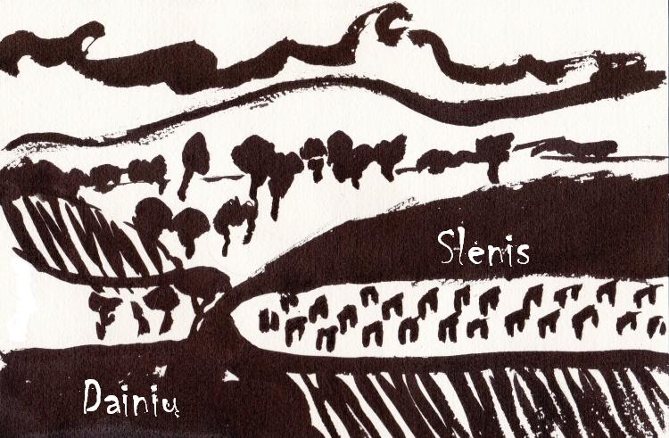

„Dainių Slėnis“ – tai nauja kaimo turizmo sodyba Anykščių rajone – šalia Kurklių miestelio. Šis gamtos kampelis Jums siūlo tiek aktyvų, tiek ramų poilsį, o taip pat galimybę organizuoti linksmus šeimos, draugų ar darbo kolektyvo susitikimus.
Ieškantiems aktyvaus poilsio siūlome: pirtį, tvenkinius plaukiojimui, maudymuisi, įvairius stalo bei lauko žaidimus, žvejybą, lauko kino teatrą ir kitas Jūsų norus galinčias patenkinti pramogas. Organizuojame nedidelioms grupėms vasaros poilsio stovyklas.